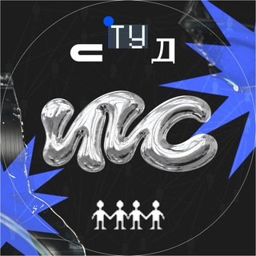
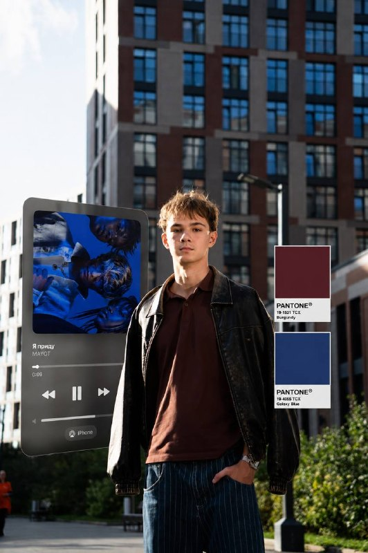
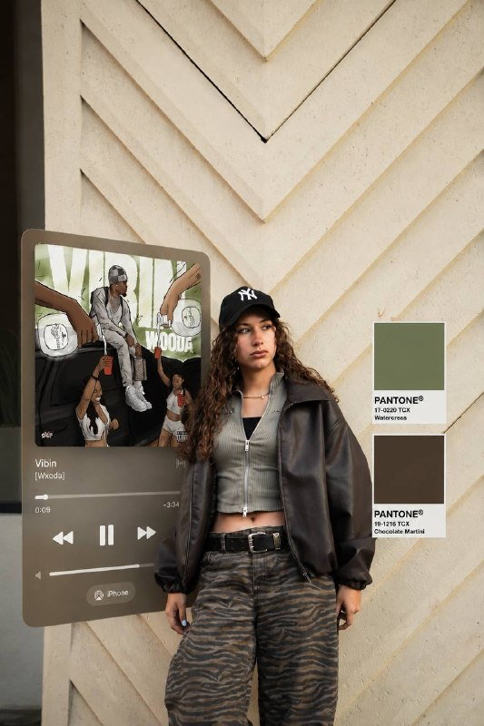
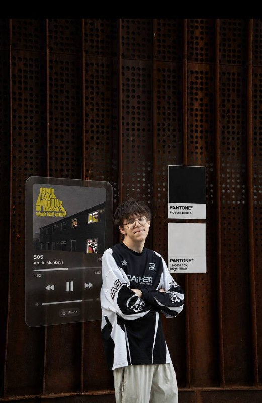
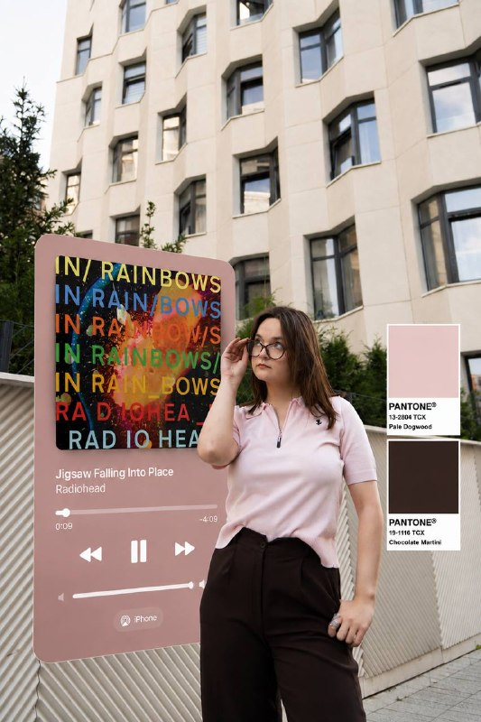
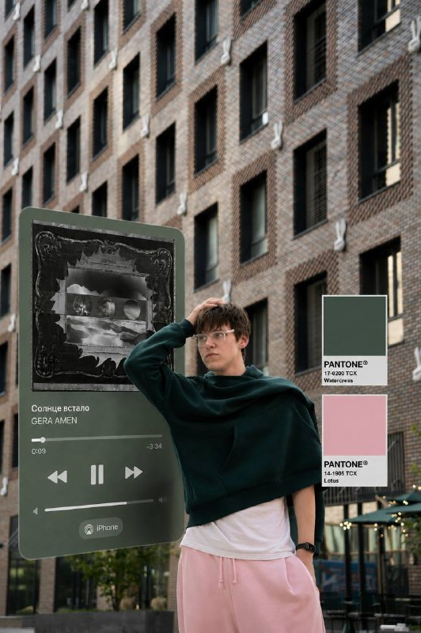
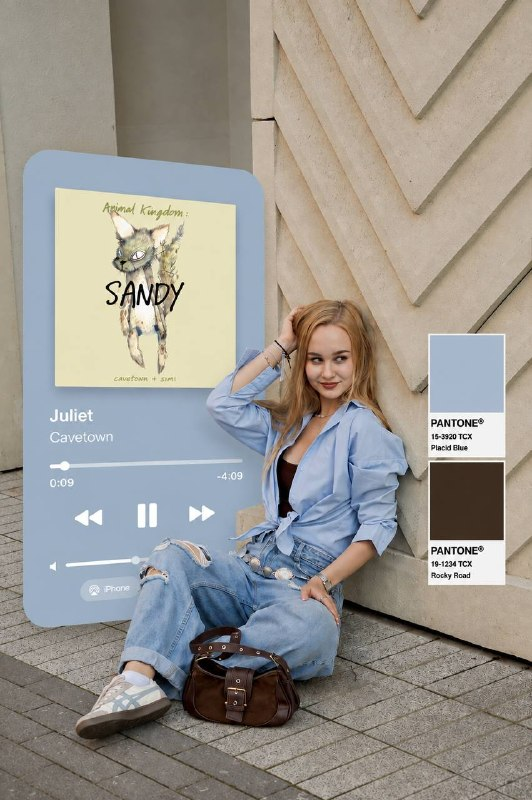
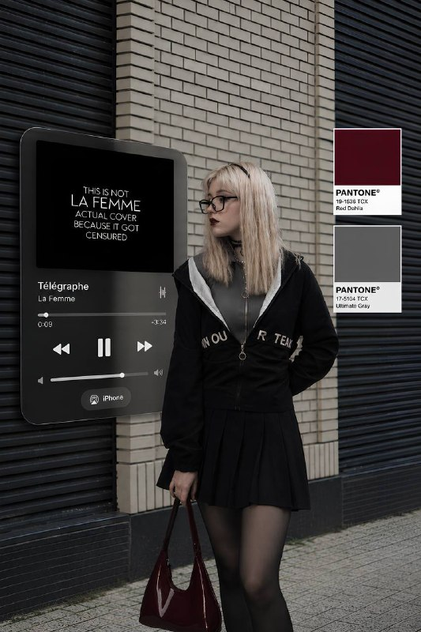
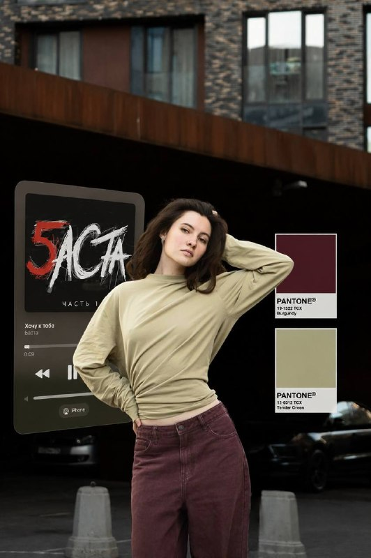
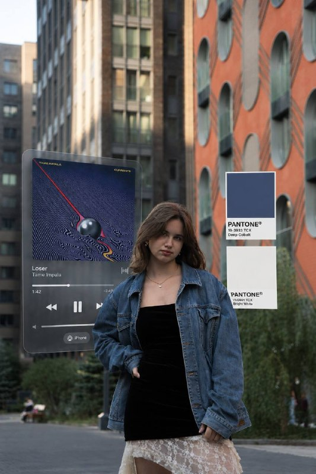

ИЗИ
ИЗИСТУД
СОВЕТ ИИС.
Новости, афиши и интерактив от ИИСовцев для ИИСовцев. Здесь начинается студенческая жизнь за пределами пар.

Знакомься:
студсовет ИИС
Видел в корпусе ребят в серо-голубых зипках? С этой детали совет начинает знакомство с командой. Это студенты Института информационных систем, которые вместе устраивают события и помогают другим в них участвовать.
У каждого здесь своё дело. Одни придумывают творческие проекты, другие снимают их и пишут о том, что получилось. Кто-то собирает команду на соревнования, а кто-то организует волонтёрский выезд или сбор помощи.
Начать можно с чата: в рассказе о направлениях совет приглашает заглянуть сразу в несколько. Ниже — ссылки на все четыре.
Команда студсовета ИИС
Пост команды ↗Правление

Павел Правдин
Врио председателя СС ИИС@paxanac
Олеся Цвелёва
Заместитель председателя СС ИИС@lesssssenok
Юрий Поляков
Заместитель председателя СС ИИС@ShoriextКультурно-массовое направление
Пост команды ↗
Вита Кобычева
Руководитель направления@vitooshaaa
Михаил Агафонов
Заместитель руководителя@godtimey
Алиса Николаева
Заместитель руководителя@mayeneorМедиа
Пост команды ↗
Алевтина Марьенко
Руководитель направления@vvaeii
Диляра Млюкова
Заместитель руководителя@lonawarey
Милана Стелько
Заместитель руководителя@Milankaaa00Спортивное направление
Пост команды ↗Владимир Никитин
Руководитель направления@vovan66nАртём Иванов
Заместитель руководителя@artemida_drankaАлексей Пахомкин
Заместитель руководителя@whokillmindСоциально-патриотическое направление
Пост команды ↗Фото — @bgtrrrva · Обработка — @vvaeii. Портреты спортивного направления — из публикации о составе команды.
Чем живёт
студсовет
Четыре команды — четыре способа поучаствовать в жизни ИИС. Выбирай направление: у каждого есть свой чат.
Культурно-массовое
Сцена, декор, сценарии и творческие вечера. Сюда, если хочется придумать событие и увидеть, как оно собирает зал.
В чат направления ↗Медиа
Снимать, писать, собирать кадры в историю. Команда рассказывает о событиях ИИС через фотографии, тексты и дизайн.
В чат направления ↗Спортивное
Найти команду, выйти на старт и выступить за ИИС. Здесь объединяются студенты, которым интересны тренировки и соревнования.
В чат направления ↗Социально-патриотическое
Волонтёрские выезды, благотворительные акции и сбор помощи. Здесь можно узнать, кому нужна поддержка и как подключиться.
В чат направления ↗Будь частью ИИС
За свежими новостями, анонсами и возможностями участия заглядывай в Telegram студсовета.